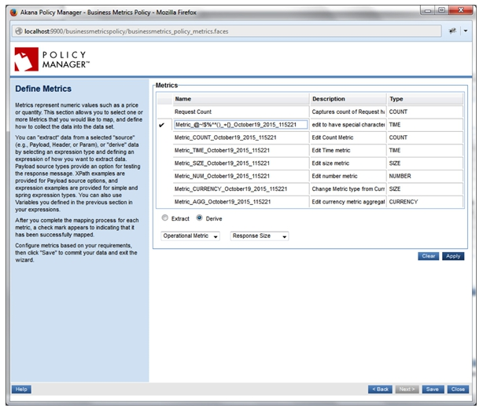
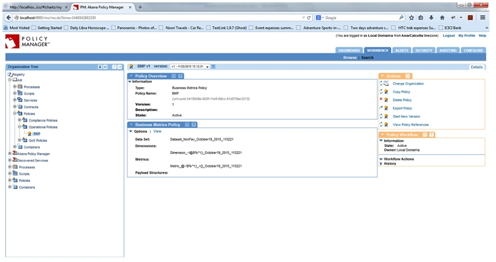
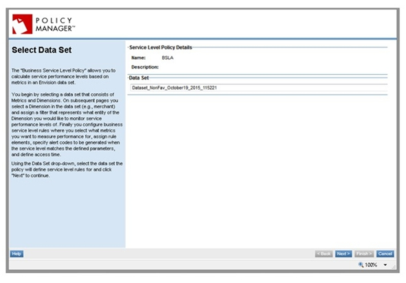
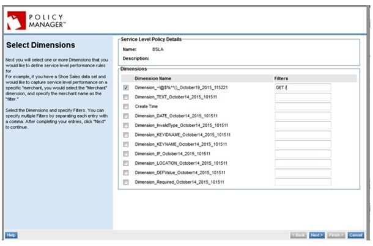

- a. Select any dataset.

- b. Provide dimensions and metrics configuration
 - c. Activate the policy.

- a. Select the same dataset as above. 
- b. Select Filters (by dimensions). 
- c. Select desired condition based on the metrics in the dataset (data is loaded into the metrics as per the configuration in Business Metrics Policy).

- d. Select alert code.
- e. Select the Days and Durations for which the alert will be triggered.

- f. Activate the policy.